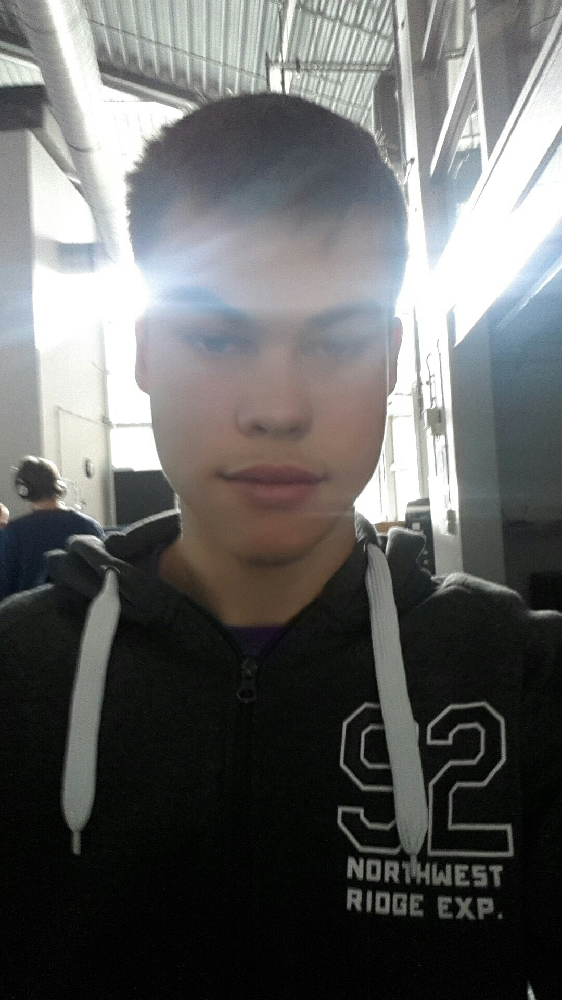

Ik zou mezelf omschrijven als een gamer ik doe graag games zoals leageu en pokemon.
Mijn doel is dat ik graag games en of apps zou willen maken of helpen met het maken hiervan, daarom koos ik voor deze opleiding.
Ik hou mijzelf gemotiveerd omdat ik nog vrij weinig weet van dit vak en graag mijn doelen wil halen.
Ik heb op het Fortess lyceum gezeten met 3 jaar havo 2 jaar mavo hierin heb ik niet veel gedaan behalve een keer tijdens een opdracht waarin ik koos om me te verdiepen in websites maken en dat vond ik toen dus leuk.
Ik ben bereid dingen voor school thuis te doen alleen als het echt moet en niet meer op school afgemaakt kan worden behalve als ik de opdracht leuk vind dan ga ik er natuurlijk beter me best voor doen.
Ik zou dan mezelf richten op het zelfstandig kunnen maken en werken aan de opdrachten.
Ik heb weinig werk ervaring, ik heb 3-4 jaar lang folders gelopen in de stad en ik denk niet dat er iets leerzaam van is, behalve dat je goed moest plannen om ze optijd te brengen zodat het ook beter voor jezelf uitkomt.
github 